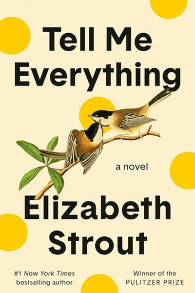

Library › Creativity
The Creative Act: A Way of Being — Summary & Key Lessons

The legendary producer behind Jay-Z, Adele and the Red Hot Chili Peppers on tuning in to the source of all creativity.
📖 OPEN THE FULL INTERACTIVE BREAKDOWN →🌐 Read it in Hindi, Hinglish, Gujarati, Tamil & 22 more languages — free, with audio.
💡 The Big Idea
Rubin — the producer behind decades of culture-defining albums — argues that creativity is not a rare talent but a way of being. The artist's real job is to notice: ideas and energy are everywhere, and creation is a matter of opening yourself, quieting your ego, and letting the work pass through you. Everyone is a creator. The practice is attention, play and openness — repeated daily.
🧠 The 5 Key Lessons
Lesson 1: Everyone Is a Creator
The Creative Act
Creativity is not a gift reserved for artists — it is the default state of a human being engaging with life. Cooking a meal, decorating a room, solving a problem at work: all are creative acts. The moment you stop believing 'I'm not creative' is the moment your work begins.
📖 Example: Rubin notes that children create without permission — drawings, games, songs — until adults teach them they aren't 'artists.' The unlearning of that belief is the real creative breakthrough. Read the full example →
⚡ Do this: Catch yourself saying 'I'm not creative' this week and replace it with 'I haven't practiced much yet.' Then practice once.
Lesson 2: The Artist's Job Is to Notice
Tuning In
Great work does not come from forcing ideas but from noticing what is already around you. Rubin treats attention like a muscle: the more you look, listen and feel, the more raw material you collect. Nature is the greatest teacher — its patterns of light, texture and rhythm are a masterclass in composition.
📖 Example: Rubin famously works in silence and lets artists find their own sound — he rarely tells them what to do, he simply pays deep attention and reflects back what he hears, trusting that the answer is already inside the work. Read the full example →
⚡ Do this: Spend 10 minutes today truly looking at something ordinary — a plant, a window, your food — and write down three details you never noticed before.
Lesson 3: Seeds Need Time
The Seed
Ideas are seeds: they need soil, water and — above all — time. Forcing a half-formed idea to completion too early kills it. Rubin advises collecting seeds without judging them, letting them incubate, and only building when a seed is ready. Not every seed must become a tree; some are meant to be left in the ground.
📖 Example: Songs on classic albums often sat as fragments for years before clicking together. Rubin compares this to a puzzle — pieces stay scattered until, one day, the picture quietly assembles itself. Read the full example →
⚡ Do this: Keep a 'seed jar' — a note where you drop half-formed ideas without judgment. Review it once a month and nurture only what still excites you.
Lesson 4: The Vessel: The Work Passes Through You
The Vessel
The ego insists 'I made this.' Rubin suggests a humbler frame: the work comes through you, not from you. You are a vessel — when you step aside, your taste, experience and honesty do the choosing. This removes the terror of failure and the inflation of success; you become a clear channel instead of a nervous performer.
📖 Example: When recording legends, Rubin keeps himself invisible: no ego, no 'producer tricks,' just creating the conditions where the artist's truest performance can appear. The best work arrives when the maker gets out of the way. Read the full example →
⚡ Do this: Next time you create, label your first draft 'received, not forced.' Judge it by how honest it is, not by how impressive you look.
Lesson 5: Play Like a Child, Work Like a Pro
Practice
The best creative state combines beginner's play with professional discipline. Playfulness opens doors that seriousness locks — it lets you experiment without self-criticism. But play alone is not enough: showing up daily, finishing, and shipping is what turns moments of inspiration into a body of work.
📖 Example: Rubin describes great studios as playgrounds with a deadline: musicians fool around, laugh, try absurd things — and because everyone knows the work matters, the play becomes the work. Read the full example →
⚡ Do this: Schedule 30 minutes of 'serious play' this week: make something with no purpose, then give it a finish line and complete it.
✅ 5-Step Action Plan
- Delete the phrase 'I'm not creative' from your vocabulary — permanently.
- Do one noticing exercise daily: find three details in something ordinary.
- Start a seed jar and fill it for 30 days before judging anything.
- Practice being a vessel: create one thing where you stay out of the way.
- Book a weekly 'serious play' session — playful, but with a deadline.
💬 Best Quotes from The Creative Act: A Way of Being
- “Everyone is a creator.”
- “The artist's job is to notice what others miss.”
- “If you have an idea, you're the right person to bring it to life.”
Interactive version: mark lessons as read, listen in your language, share quote cards.